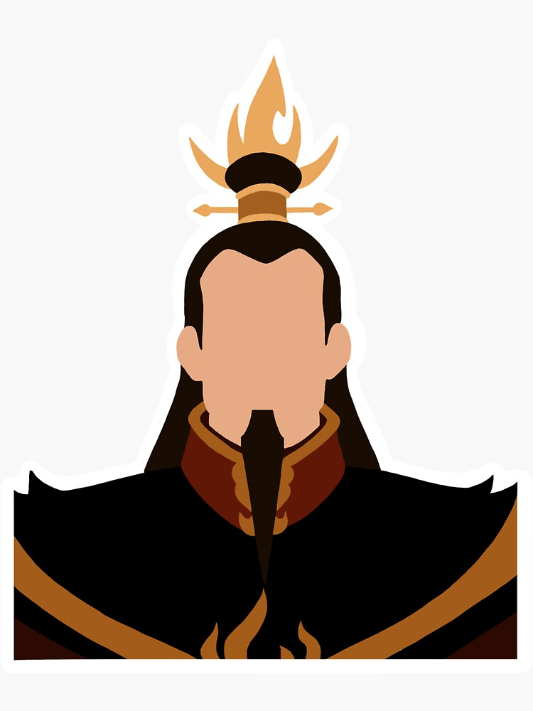
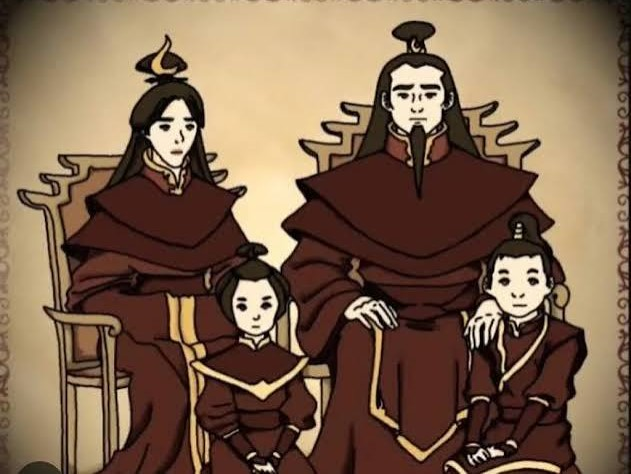

Ozai | Zuko | Azula | Iroh | Dinâmica


A Família Real da Nação do Fogo é uma das dinastias mais complexas e influentes do universo de Avatar, marcada por poder militar, tradições rígidas e conflitos internos que atravessam gerações. No centro dessa história está o Senhor do Fogo Ozai, uma figura autoritária que representa o auge da ambição imperial da Nação do Fogo. Seu governo é caracterizado pela busca de dominação sobre as outras nações, sustentado por uma visão de superioridade e pela expansão constante do poder militar. Sob sua liderança, a família real não é apenas um símbolo de governo, mas também o coração de decisões que afetam todo o mundo conhecido.
Dentro dessa estrutura de poder, seus filhos ocupam papéis fundamentais e profundamente contrastantes. O príncipe Zuko cresce sob a pressão de corresponder às expectativas de seu pai, carregando desde cedo o peso da honra e da aprovação familiar. Sua jornada é marcada por rejeição, especialmente após um episódio traumático em que é desfigurado e banido, o que o leva a uma busca intensa por identidade, propósito e reconciliação com sua própria história. Zuko representa a luta interna entre o que a família impõe e o que o coração considera justo, tornando-se um dos personagens mais humanos e transformadores da narrativa.
Em contraste direto, a princesa Azula é retratada como uma prodígio do controle do fogo e da manipulação estratégica. Inteligente, calculista e extremamente talentosa, Azula foi moldada para ser a sucessora perfeita de Ozai. No entanto, sua personalidade também revela uma profunda instabilidade emocional, alimentada por cobranças, isolamento afetivo e a necessidade constante de controle absoluto. Sua trajetória demonstra como o poder, quando não equilibrado por vínculos saudáveis, pode se transformar em autodestruição. Azula simboliza o lado mais frio e implacável da família real, onde o talento e a disciplina são levados ao extremo.
Outro membro essencial dessa linhagem é o príncipe Iroh, irmão de Ozai e tio de Zuko e Azula. Diferente dos demais, Iroh representa sabedoria, compaixão e equilíbrio. Antigo general renomado, ele passa por uma transformação profunda após perdas pessoais, abandonando a busca por conquistas militares para se tornar um guia espiritual e emocional para Zuko. Sua presença na história funciona como um contraponto à rigidez da família real, mostrando que força não está apenas no domínio, mas também na compreensão e na paz interior.
A dinâmica entre esses membros revela uma família dividida entre caminhos opostos: conquista e destruição de um lado, e redenção e equilíbrio do outro. As relações são marcadas por tensão, expectativa e, muitas vezes, ausência de afeto genuíno. O Senhor do Fogo Ozai enxerga seus filhos como extensões de seu poder, enquanto Zuko e Azula reagem a essa pressão de formas completamente diferentes — um buscando aceitação, a outra buscando perfeição absoluta.
Além dos conflitos pessoais, a Família Real da Nação do Fogo também desempenha um papel central na política global do mundo de Avatar. Suas decisões influenciam guerras, alianças e o equilíbrio entre as nações. A família não é apenas um grupo de indivíduos, mas um símbolo de um império que molda a história ao seu redor. Ao mesmo tempo, suas fragilidades internas mostram que até mesmo os mais poderosos podem ser afetados por emoções, traumas e escolhas pessoais.
No fim, a história dessa dinastia não é apenas sobre poder, mas também sobre identidade, legado e transformação. Cada membro representa uma possibilidade diferente de futuro: Ozai encarna a dominação, Azula o controle extremo, Zuko a mudança e Iroh a sabedoria. Essa diversidade dentro da mesma família torna sua narrativa uma das mais ricas e profundas de todo o universo de Avatar.
Ir para página da Azula
Ir para página do Zuko
Ir para a Wikipedia do Avatar (em Inglês)